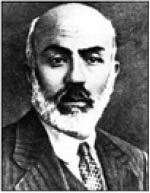
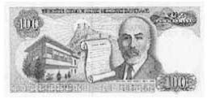

Mehmet Akif Ersoy
Mehmet Akif Ersoy (1873-1936)
“Vurulup tertemiz alnından, uzanmış yatıyor, Bir hilal uğruna, ya Rab, ne güneşler batıyor!”
Mehmet Akif, 1873 yılında Osmanlı Devleti’nin yavaş yavaş sona yaklaştığı, düşmanların ülkenin üzerinde ganimeti paylaşmak için planlar yaptığı, halkın korkuyla umudu birlikte yaşadığı bir dönemde İstanbul’da doğdu.
Dönemin okullarını bitirdikten sonra, mezun olanlara hemen iş verileceği vaat edilen ve o yıl ilk kez açılan sivil veteriner yüksek okuluna gitti.
Okulunun son yıllarında merak sardığı şiir çalışmaları dönemin Tarım Bakanlığı’nda veteriner olarak görev yaparken artarak devam etti.
İlk şiirleri resmi gazetede yayımlandı. İlerleyen yıllarda Burdur milletvekili olarak seçildi. O dönemde açılan İstiklal Marşı güftesi yarışmasına katılan 724 şiirden hiçbiri seçilmeyince maarif vekilinin ricası üzerine 17 Şubat 1921’de yazdığı İstiklal Marşı, 12 Mart’ta birinci TBMM tarafından kabul edildi.
“Korkma sönmez bu şafaklarda yüzen al sancak;
Sönmeden yurdumun üstünde tüten en son ocak.”
Başlıca eserleri, Safahat, Süleymaniye Kürsüsünde, Hakkın Sesleri, Fatih Kürsüsünde, Hatıralar, Asım ve Gölgeler olan İstiklal Marşı şairimiz 27 Aralık 1936’da doğduğu kent İstanbul’da hayata gözlerini yumdu.
Mehmet Akif Ersoy hastalandığı bir dönemde günlerce yataktan çıkamamıştır. Ziyaretine tanımadığı fakat görünüşünden âlim biri olduğu düşünülen bir kişi gelince büyük şair nezaket gereği ayaklarını toplar. Hâl hatır sorulduktan sonra ziyarete gelen kişi “Efendim uzun zamandır aklımı kurcalayan bir konu var, gökkuşağının altından geçen kızlar erkek, erkekler kız oluyormuş, siz ne düşünüyorsunuz bu konuda?” diye sorar.
Mehmet Akif yatağına rahatça uzanır ve şöyle der, “Bu sorudan sonra ayaklarımı uzatabilirim!”
Büyük şair yapmacık mimiklerle hissedilmeden okunan şiirlerden hoşlanmazdı. Bir gün bir toplantıda böyle biri Mehmet Akif’in “Bülbül” şiirini okur. Bu duruma zaten sinirlenmiş olan Akif, bu okumayı nasıl bulduğu sorulduğunda “Bu bülbül bizim bülbüle benziyor, ama adam ne kanadını bıraktı ne de kuyruğunu.” yanıtını verir.
Bir toplantıda Mehmet Akif’i küçük düşürmek isteyen biri, “Affedersiniz, siz baytardınız değil mi?” diye sorar.
Mehmet Akif, “Evet, bir yeriniz mi ağrıyordu?” diye cevaplar.
“Edepsizliğin başladığı yerde, edebiyat biter.”
